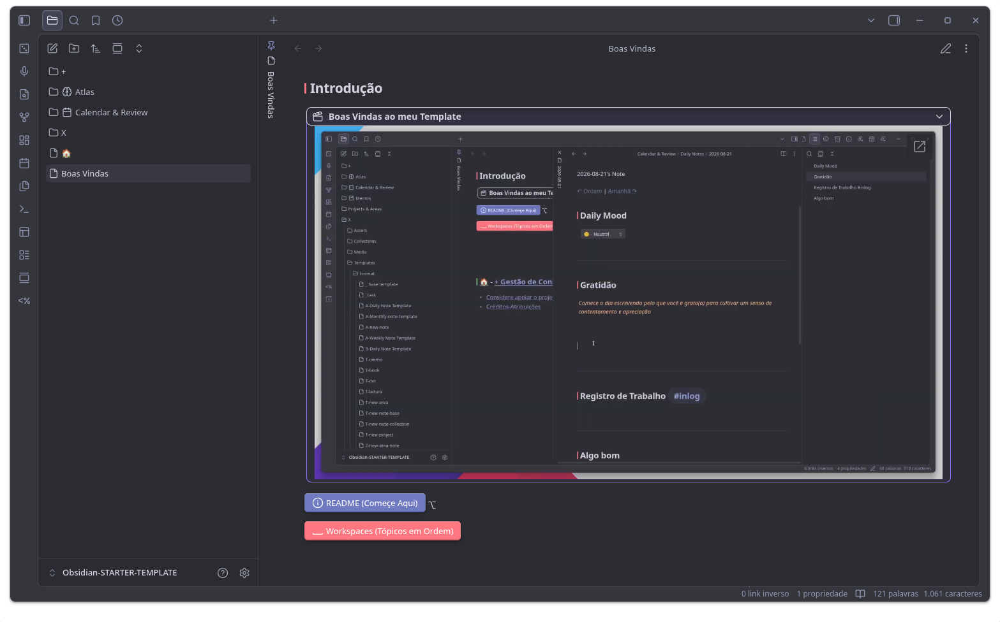
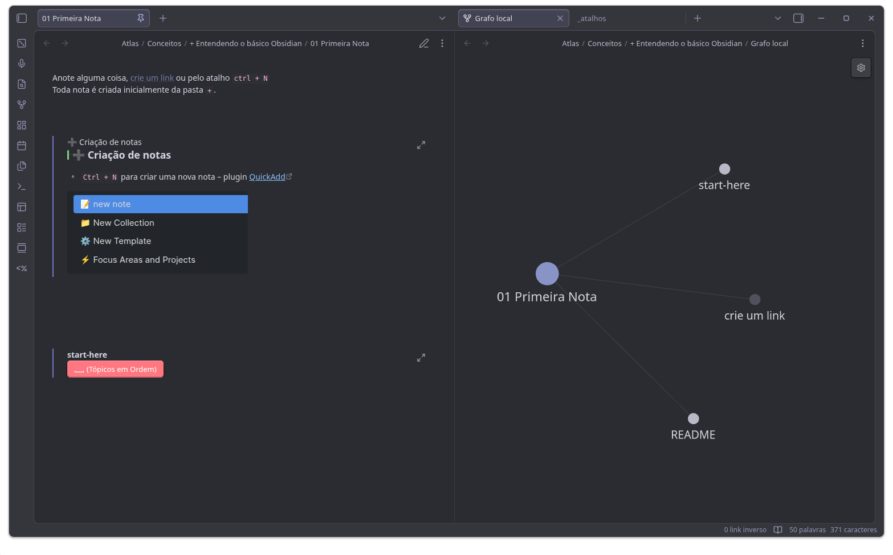
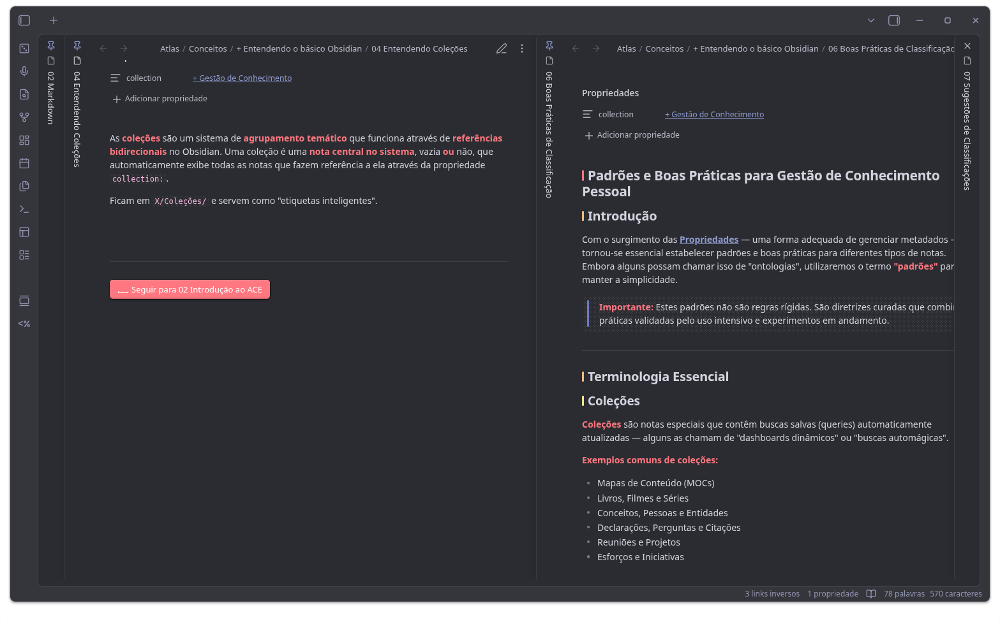
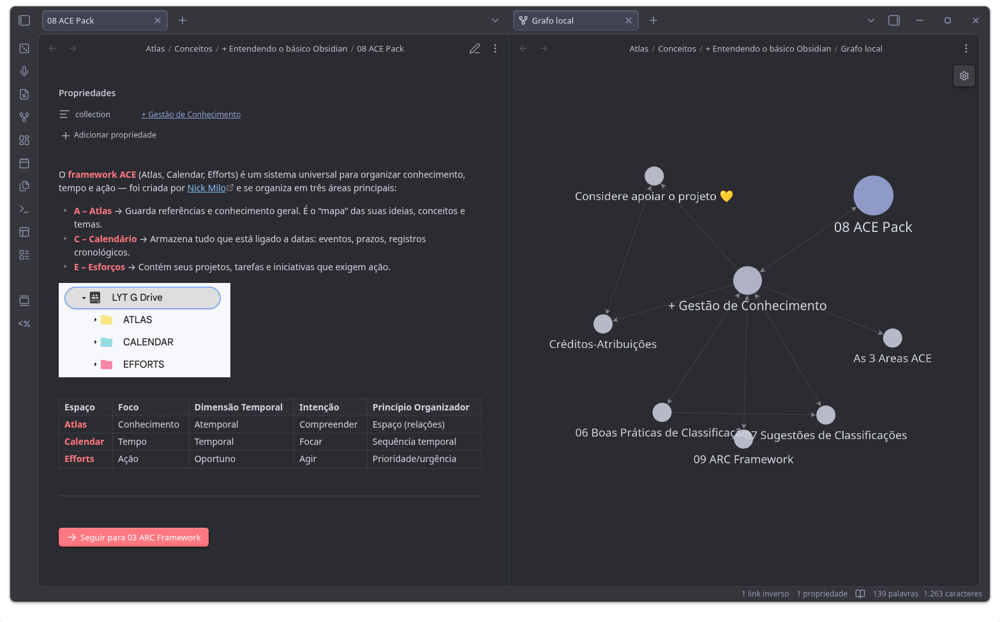
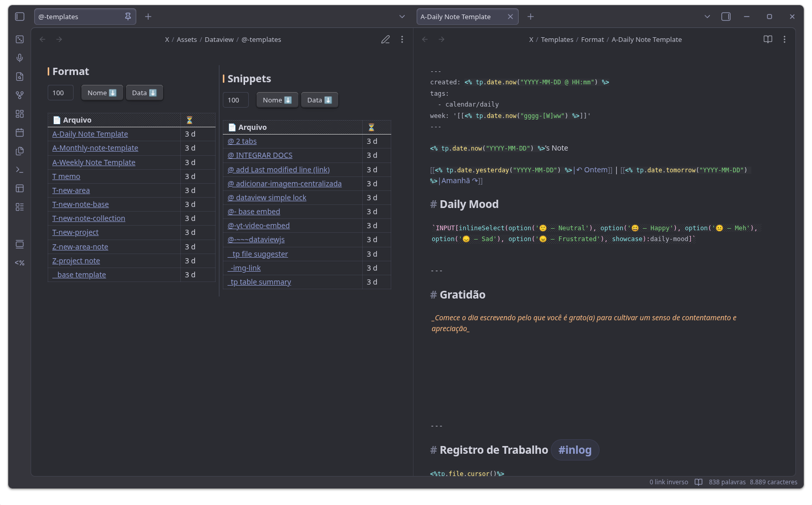
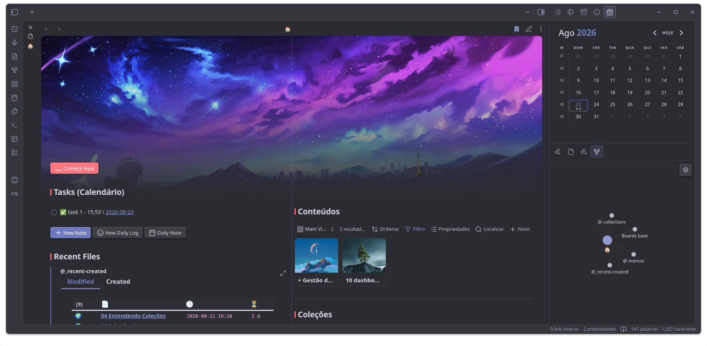

Template gratuito para Obsidian com sistema completo de organização. Método PARA, dashboards, templates e comunidade ativa — tudo em português.
Gratuito · Em português · Sem plugins pagos
Screenshots reais do Starter Template funcionando no Obsidian.






Um vault baseado nos métodos ACE e ARC, com plugins e templates prontos para uso.
Pastas Atlas, Calendar e Efforts já estruturadas — conhecimento, tempo e ação organizados pelo framework de Nick Milo.
Pasta `+` como área de resfriamento para ideias novas: adicione, relacione e comunique em um ciclo autossustentável.
Tópicos em ordem via Workspaces: da primeira nota ao ARC Framework, com botões interativos para seguir a trilha.
Crie notas com `Ctrl + N` e registre pensamentos rápidos nas notas diárias, sem atrito no seu fluxo.
Dataview, Calendar, Meta Bind, Iconize, Templater e mais — lista completa da comunidade já instalada e configurada.
Soluções diretas para bugs de plugins, snippets de CSS e Templater documentadas na página inicial do vault.
Baixou o template? Agora é hora de se conectar. Tire dúvidas, compartilhe ideias e aprenda com outros usuários de Obsidian.